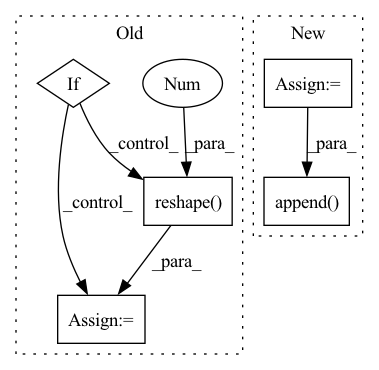

Pattern ID :1488
Before Change
greedy = inputs is None
// (B, T, mel_dim) -> (B, T", mel_dim*r)
if inputs is not None:
// Grouping multiple frames if necessary
if inputs.size(-1) == self.mel_dim:
inputs = inputs.reshape( B, inputs.size(1) // self.r, -1 )
assert inputs.size(-1) == self.mel_dim * self.r
T_decoder = inputs.size(1)
// Time first (T", B, mel_dim*r)
if inputs is not None:After Change
// Project to mel
// (B, mel_dim*r) -> (B, r, mel_dim)
output = self.mel_proj(proj_input)
output = output.view(B, -1, self.mel_dim)
// Stop token prediction
stop = self.stop_proj(proj_input)
stop = torch.sigmoid(stop)
// Store predictions
mel_outputs.append( output)
attn_scores.append(attention_score.unsqueeze(1))
stop_tokens.extend([stop] * self.r)
if greedy:In pattern: SUPERPATTERN
Frequency: 3
Non-data size: 5
Instances Fragment ID: 4391538
Project Name: thuhcsi/tacotron
Commit Name: fea9ec535ec373aad564646f4f292fbee0217c29
Time: 2021-03-18
Author: johnson.tsing@gmail.com
File Name: model/tacotron2.py
M Class Name: Decoder
N Class Name: Decoder
M Method Name: forward(4)
N Method Name: forward(4)
M Parent Class: nn.Module
N Parent Class: nn.Module
M File Name: model/tacotron2.py
N File Name: model/tacotron2.py
M Start Line: 127
M End Line: 224
N Start Line: 127
N End Line: 216
Before Change
encoderIn = xRaw.detach().permute(2, 3, 0, 1)
// encoderIn = xRaw.permute(2, 3, 0, 1)
// [h, w, n, c] -> [h*w, n, c]
if False:
encoderIn = self._position(encoderIn).reshape(-1, n, c)
// encoderIn = encoderIn.reshape(-1, n, c)
// [h*w, n, c]
x = self._encoder(encoderIn)
else:
x = encoderIn.reshape(-1 , n ,c)
// similar to scaled dot-product attention
// [h*w, N, Cin], M * [h*w, n, k]
quantized, samples, logits = self._attention(x, temp, True)
// quantized = xAfter Change
x = self._encoder(codebook, encoderIn)
// [h*w, n, k]
logit = self._select(x)
sample = F.gumbel_softmax(logit, temp, True)
// [k, 1, c]
codewords = self._codebookEncoder(codebook)
// [h*w, n, c]
quantized = sample @ codewords[:, 0, ...]
// [h*w, n, c]
posistedQuantized = self._position(quantized.reshape(h, w, n, c)).reshape(-1, n, c)
// [k, 1, c]
decodedCodes = self._codebookDecoder(codebook)
// [n, c, h, w]
deTransformed = self._decoder(decodedCodes, posistedQuantized).reshape(h, w, n, c).permute(2, 3, 0, 1)
// [n, c, h, w]
quantizeds.append(deTransformed)
codes.append( sample.argmax(-1).permute(1, 0).reshape(n, h, w))
logits.append(logit.permute(1, 0, 2).reshape(n, h, w, k))
return quantizeds, codes, logits
Fragment ID: 4391537
Project Name: xiaosu-zhu/mcquic
Commit Name: a4a40624c11a9779699f4a37cccb5b5ed8bc5048
Time: 2021-04-10
Author: xiaosu.zhu@outlook.com
File Name: src/mcqc/models/quantizer.py
M Class Name: TransformerQuantizer
N Class Name: TransformerQuantizer
M Method Name: forward(3)
N Method Name: forward(3)
M Parent Class: nn.Module
N Parent Class: nn.Module
M File Name: src/mcqc/models/quantizer.py
N File Name: src/mcqc/models/quantizer.py
M Start Line: 271
M End Line: 298
N Start Line: 504
N End Line: 534
Before Change
greedy = inputs is None
// (B, T, mel_dim) -> (B, T", mel_dim*r)
if inputs is not None:
// Grouping multiple frames if necessary
if inputs.size(-1) == self.mel_dim:
inputs = inputs.reshape( B, inputs.size(1) // self.r, -1 )
assert inputs.size(-1) == self.mel_dim * self.r
T_decoder = inputs.size(1)
// Time first (T", B, mel_dim*r)After Change
// Project to mel
// (B, mel_dim*r) -> (B, r, mel_dim)
output = self.mel_proj(proj_input)
output = output.view(B, -1, self.mel_dim)
// Stop token prediction
stop = self.stop_proj(proj_input)
stop = torch.sigmoid(stop)
// Store predictions
mel_outputs.append( output)
attn_scores.append(attention_score.unsqueeze(1))
stop_tokens.extend([stop] * self.r)
if greedy: Fragment ID: 4391536
Project Name: thuhcsi/tacotron
Commit Name: fea9ec535ec373aad564646f4f292fbee0217c29
Time: 2021-03-18
Author: johnson.tsing@gmail.com
File Name: model/tacotron.py
M Class Name: Decoder
N Class Name: Decoder
M Method Name: forward(4)
N Method Name: forward(4)
M Parent Class: nn.Module
N Parent Class: nn.Module
M File Name: model/tacotron.py
N File Name: model/tacotron.py
M Start Line: 87
M End Line: 187
N Start Line: 88
N End Line: 180